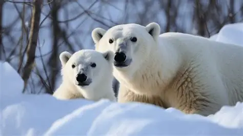
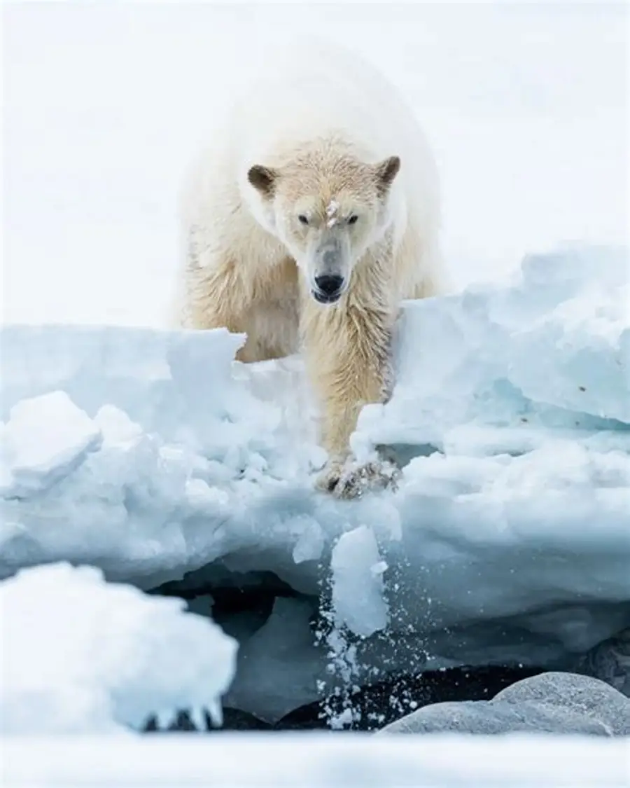

der Eisbär
Auf dieser Website erfährst du spannende Informationen zu den Eisbären.
Eisbären

Grösse, Gewicht, lebensraum, Nahrung, und, Verwantschaft.
Beispieltext. Hier stehen alle wichtigen Infos über Eisbären.

Lebensraum
Der Eisbär (Ursus maritimus) lebt überwiegend im arktischen Packeis rund um den Nordpol, besonders in Regionen wie Spitzbergen, Grönland, Nordkanada, Alaska und Nordrussland. Sein Lebensraum besteht aus Meereisflächen, Küstenzonen und eisbedeckten Gewässern, die er zur Robbenjagd und Fortbewegung benötigt.
Verwantschaft
Der Eisbär (Ursus maritimus) ist eine Raubtierart aus der Familie der Bären und lebt in den nördlichen Polarregionen. Er ist eng mit dem Braunbären verwandt und gilt als die größte Raubtierart an Land. Eisbären sind bekannt für ihr dickeres, gelblich-weißes Fell, das ihnen Wärme im eisigen Klima bietet. Sie leben in Reviere und sind tagaktive Einzelgänger, die sich durch ihre langen, kräftigen Pfoten und Schwimmhäute an Land und im Wasser gut anpassen. Eisbären sind auch für ihre Fähigkeit bekannt, sich im Schnee zu bewegen, ohne einzusinken, und sie wälzen sich im Schnee, um sich abzukühlen.Jagdverhalten
Eisbären sind hoch spezialisierte Robbenjäger, die in ständiger Wechselwirkung mit ihrer Beute leben. Ohne die Robben gäbe es keine Eisbären. Ohne die Robben hätten sich die Braunbären nie aufs Eis gewagt. Ohne die Robben hätten die Vorfahren von Ursus maritimus nie ein weißes Fell bekommen, sich vom Land- zum Meeressäuger und vom Allesfresser zum Fleischfresser entwickelt. Mit schätzungsweise bis zu sieben Millionen Individuen ist die Ringelrobbe die häufigste Robbenart des Nordpolarmeeres. Wikipedia Eisbären jagen überwiegend Robben, die sie aufgrund ihrer speziellen Nasen auf eine Entfernung von bis zu einem Kilometer und durchs Eis erschnüffeln können. Sie jagen vom späten Frühling bis zum Frühsommer und bringen die Robben während dieser Jahreszeit zur Welt. Der Rückzug des Eises macht sie jedoch schwerer erreichbar. Wikipedia Die Eisbären sind die größten Raubtiere an Land und haben eine bis zu zehn Zentimeter dicke Speckschicht. In Kombination mit der raffinierten Körperbehaarung und dem stämmigen Körperbau schützt das Fett gegen die extreme Kälte im Winter von durchschnittlich minus 22 Grad Celsius. www.wwf.ch
Nahrung
Der Eisbär (Ursus maritimus) ist ein Raubtier, das hauptsächlich in den nördlichen Polarregionen lebt. Er ist bekannt für seine große Größe und seine transparenten Haare, die ihm helfen, die Wärme des Sonnenlichts zu nutzen. Eisbären ernähren sich hauptsächlich von Robben, die sie tagsüber im Wasser jagen. Sie sind tagaktive Einzelgänger und verbringen die meiste Zeit mit Wandern, Schlafen und Ausruhen. Ihre Ernährung kann je nach Jahreszeit variieren, wobei sie im Winter mehr Robben jagen können als im Sommer, wenn das Meereis schmilzt.
Bildergalerie